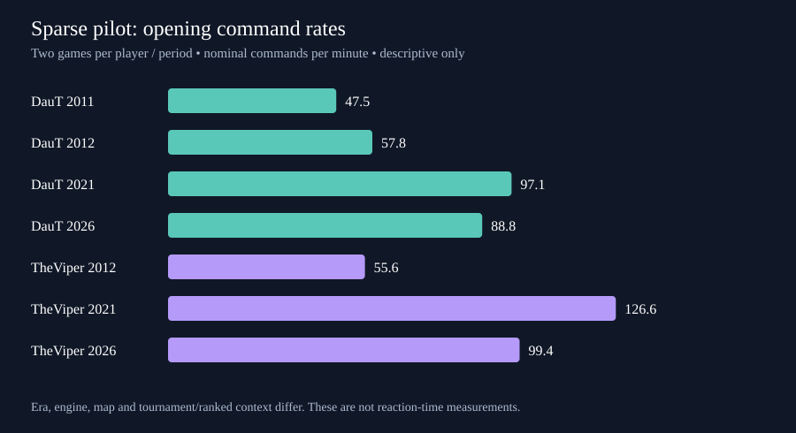

# Sparse replay pilot: DauT and TheViper across career periods A reproducible hackathon pilot measuring command behavior in younger and later career recordings. This is a descriptive feasibility study; it does not measure cognitive aging. ## Sampling and provenance Earliest dated two games per player/year with game_id tie-break; 2026 TheViper uses the two shortest available games for deadline-compatible state validation. Selection uses no command-feature outcome. Convenience sampling and duration selection introduce bias. Two games per available player/year: DauT 2011, 2012, 2021, 2026; TheViper 2012, 2021, 2026. All selected raw replay SHA-256 hashes were checked. Every sampled game has whole-game commands and a standardized first-ten-game-minute window. Historical dates can be upload/filename dates; see provenance.json. 14 player-game observations from 14 distinct replay files. Shared team games can contribute observations to both players and are not independent. ## Measured results Opening and whole-game command rates are per nominal real minute: game-clock duration divided by replay-recorded nominal speed. They are not directly measured human input rates. | Player | Year | Games / clusters | Opening commands/min | Whole-game commands/min | Opening large destination jumps | |---|---:|---:|---:|---:|---:| | DauT | 2011 | 2 / 1 | 47.5 | 45.6 | 5.7% | | DauT | 2012 | 2 / 1 | 57.8 | 42.5 | 12.9% | | DauT | 2021 | 2 / 2 | 97.1 | 71.2 | 13.2% | | DauT | 2026 | 2 / 1 | 88.8 | 87.9 | 5.1% | | TheViper | 2012 | 2 / 1 | 55.6 | 47.6 | 2.3% | | TheViper | 2021 | 2 / 1 | 126.6 | 107.5 | 10.3% | | TheViper | 2026 | 2 / 1 | 99.4 | 100.7 | 3.9% | A large destination jump is a distance of at least one-quarter map diagonal between consecutive valid move/order destinations. It measures spatial command dispersion; it does not measure gaze, attention switching or memory. DauT: the sparse opening median changes from 97.1 in 2021 to 88.8 in 2026 (-8.5%). This is a sample difference, not an identified age effect. TheViper: the sparse opening median changes from 126.6 in 2021 to 99.4 in 2026 (-21.5%). This is a sample difference, not an identified age effect. Full-data sensitivity check: the previously validated 2021/2026 opening medians are DauT 95.82 → 84.84 and TheViper 122.19 → 102.75. Whole-game medians rise in that larger sample (DauT 74.72 → 86.12; TheViper 94.73 → 103.32). A general slowing claim is therefore unsupported. See full_period_summary.csv. ## What the features can establish - Command frequency and destination dispersion: observed replay command behavior. - Build/wall/research rates: issued commands, not completed actions or strategic success. - Reaction time: unavailable without a visible threat onset and a linked response. Command gaps are not reaction time. - Working memory: not measured. No validated memory task or capacity estimate is present. - Compensation: hypothesis only. More planning or repeated commands cannot by itself establish compensation. - Onager dodging: zero classified episodes; projectile/state decoding and threat visibility remain unvalidated. ## State capture status Recent game-state streams are optional technical validation, separate from the longitudinal command comparison. The running sparse queue targets one complete DauT game and the two shortest recent TheViper games. A second DauT capture preserves more than ten game minutes but is an incomplete match. Historical 2021 state simulation needs an older DE engine; 2011/2012 needs a compatible classic engine. These historical state frames have not been collected. The current API22 binary state schema is not decoded. See state_capture_status.json for the build-time snapshot and ../engine-pass/status.json for live progress. ## Limits and next experiment Classic and DE files have different command encoding and timestamp granularity; cross-engine rates are exploratory. The 2012 recordings include team games; player-slot ownership and research coverage vary by version. 2021 is tournament play and 2026 is a small ranked session. Maps, opponents, civilizations, patches and game lengths differ. Two games per stratum provide no reliable population uncertainty or age attribution; no significance tests are presented. Explicit actor selection covers only part of raw commands, so group switching is excluded from longitudinal conclusions. The next falsifiable experiment would sample matched maps, civilizations, opponents and game phases, identify visible projectile threats, measure threat-to-command latency in game-clock time with timestamp-resolution checks, and score dodge outcomes. Repeated sessions and independent tournaments are required before an age interpretation. ## Reproduce Run `python artifacts/aoe2-aging/scripts/deadline_sparse.py` from the repository root. Inputs are the existing verified replay-command tables and original raw files. The ZIP includes sampled replays, provenance, selected rows, period summaries, full-data sensitivity, validation and the script. No credentials or player chat are included.
# TaToH extension and basic replay APM TaToH adds one partial 2021 tournament replay, two 2026 tournament games and two 2026 ranked games. Earliest available tournament games were selected by date/game name; ranked games use the existing TheViper-versus-TaToH capture and one additional compatible short replay. This is convenience sampling. The two recent ranked games are from separate days. There is no verified 2011/2012 TaToH baseline. | Period | Games | Partial games | Opening core CPM | Whole available core CPM | |---|---:|---:|---:|---:| | 2021 tournament | 1 | 1 | 101.2 | 77.3 | | 2026 ranked | 2 | 0 | 113.6 | 103.4 | | 2026 tournament | 2 | 0 | 91.8 | 85.3 | The 2021 archive was truncated upstream. Its first 69.5 game minutes were recovered; opening coverage is present, but its available-replay rate is not a complete-match rate. That single historical game cannot establish a temporal trend. TaToH identity is checked through profile 197388 or the documented HC4 alias Le Loi. ## Basic APM definition Replay-derived APM counts all decoded ACTION records explicitly attributed to the player, including production/queue commands, divided by nominal minutes (game clock / recorded game speed). It does not count mouse clicks, camera movement, hotkeys or selections that leave no attributed ACTION record. ACTION semantics and ownership coverage differ across engine versions. Do not present this as device-input APM or directly compare it to CaptureAge/eAPM without matching definitions. Core CPM excludes non-core action types; the two measures have different denominators of actions. | Player | Period | Games | Opening replay APM | Whole available replay APM | |---|---|---:|---:|---:| | DauT | 2011 1v1 challenge | 2 | 47.5 | 46.1 | | DauT | 2012 team game | 2 | 57.8 | 42.9 | | DauT | 2021 1v1 tournament | 2 | 101.4 | 89.4 | | DauT | 2026 1v1 ranked | 2 | 104.9 | 107.5 | | TaToH | 2021 tournament | 1 | 106.1 | 98.1 | | TaToH | 2026 ranked | 2 | 144.4 | 141.8 | | TaToH | 2026 tournament | 2 | 107.7 | 121.8 | | TheViper | 2012 team game | 2 | 56.1 | 68.0 | | TheViper | 2021 1v1 tournament | 2 | 132.8 | 125.2 | | TheViper | 2026 1v1 ranked | 2 | 128.9 | 131.3 | These rates measure recorded actions. Reaction time, working-memory capacity and compensation remain unmeasured. No age-effect test is claimed. Completed engine captures: one DauT match and two TheViper matches. The 14.6-minute TheViper game also includes TaToH, so one complete TaToH state stream is already available. The additional 17.6-minute TaToH match is also fully captured. All four selected match captures passed end verification with zero reported skipped simulation steps. Current binary state remains undecoded. State command summaries are included; raw state streams remain in engine-pass and are not embedded in this small ZIP.
# Expanded metric analysis and earlier-game check The registry contains 255 candidate measurements and control variables. These are not 255 completed features. Thirty-one command-based numeric features were calculated for 49 player-game observations in opening and whole-available-replay windows. All 88 overlapping DauT/TheViper window command rates agree with the previously validated analysis. Actor-group metrics were additionally calculated for six recent player-game observations, with incomplete match coverage labeled. ## Earlier-game coverage DauT: four 2011 recordings and seven 2012 team games are included in the expanded command analysis. TheViper: nine 2012 observations are included. Their classic-engine timestamp and ownership differences preclude direct high-resolution timing comparisons with DE. There is no newly verified sample before these earliest periods. TaToH: the 2019 archive contains a fully consumed 32.983-minute replay with +Zaid versus feudalVoy. Its uploader title and description explicitly attribute it to TaToH. This supports community attribution, not independent account identity. The replay appears to concern the Feudal-only challenge, so it is quarantined from the main unrestricted-play comparison. Its attributed opening replay command rate is 108.66 per nominal minute, but 20.9% of all replay actions have no player ownership and are omitted from player-specific rates. Do not interpret it as a verified basic-input APM baseline. See 2019_provisional_features.csv and 2019_provisional_provenance.json. The 2021 TaToH pack was retried with a cache refresh and byte-range request. It still returned exactly 524,288 bytes, and the range beyond that returned HTTP 416 with total size 524,288. Aocrecs failed TLS verification; certificate verification was retained. Archive search found the 2019 candidate but no additional verified earlier TaToH replay. Logs are included. ## Completed state capture Four full matches are complete, containing 362011 frames in total and zero reported skipped simulation steps. TheViper versus TaToH supplies data for both players. State-command summaries and actor-group features are included; raw state frames remain in engine-pass. Binary world state, projectile paths and player visibility have not been decoded, so this is not an onager-dodge analysis. ## New features and interpretation Command volume, positive gap percentiles, longest gap, simultaneous command fraction, gap variation, burstiness, five-second activity variation, empty bins, time in long command silences, command-type/category entropy, transition entropy, category switches, repeated triplets, spatial destination entropy and jumps, and approximate deduplicated command rate are in behavior_features.csv. Whole-game and phase-specific values have different exposure and survivor composition. Classic timing fields are flagged as incomparable with DE. Engine actor features use explicit unit sets in humanOrder=true commands with an explicit player ID. Exact group size, overlap and revisit behavior describe command organization; they do not identify semantic tasks, attention or memory capacity. Flag fields are reported literally. For an aging study, prioritize opportunity-normalized visible-threat response, dodge success/damage avoidance, economy idle time during matched battle, and performance loss with simultaneous fronts. These need validated world state, player visibility and comparable repeated sessions. APM alone cannot isolate age effects. ## Reproduce Use the repository environment and run deadline_sparse.py, extend_tatoh_submission.py, behavior_metrics.py, metric_catalog.py, earlier_candidate.py, engine_actor_features.py, then finalize_expanded_bundle.py. Raw data paths and source hashes are retained. No significance test or causal aging claim is presented.